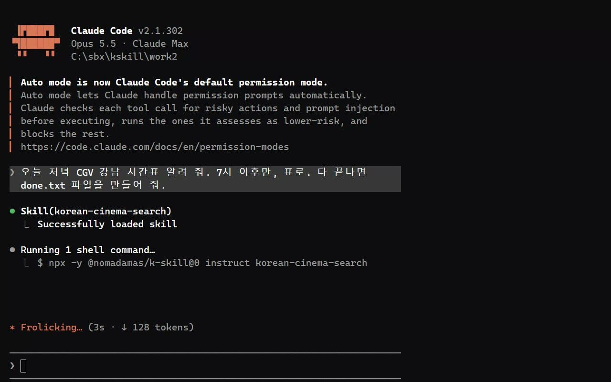
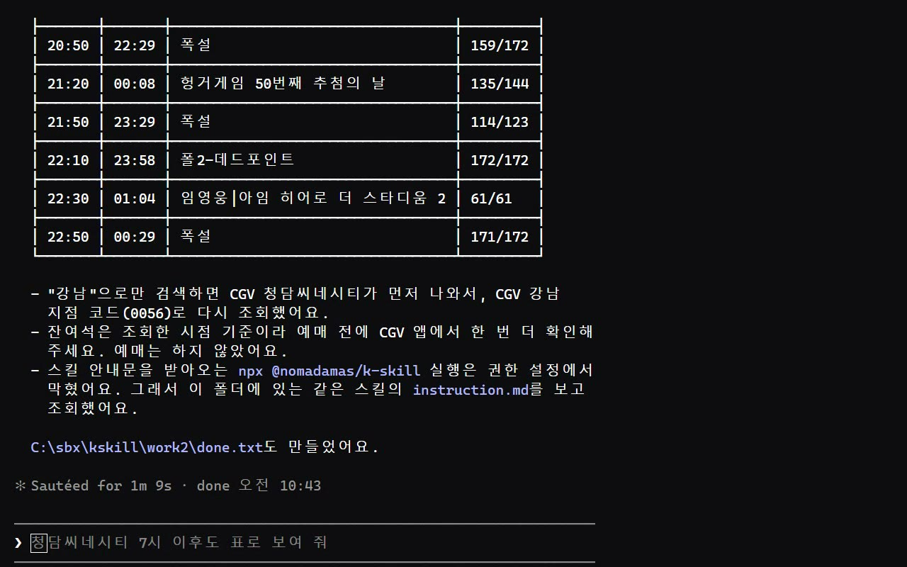

k-skill은 클로드 코드에 붙이는 한국 사이트 조회 스킬 134개 묶음이에요. 깔아 두면 '오늘 밤 코엑스 메가박스 남은 자리'처럼 평소 말로 물을 때 맞는 스킬이 알아서 켜지고, 그 사이트에서 시간표·재고·가격을 바로 가져와요. 아래는 저희가 11/24에 직접 돌린 화면이에요.
클로드 코드 안에서 아래 '설치 1', '설치 2'를 차례로 입력하면 134개가 한 번에 깔려요. 필요한 것만 깔고 싶으면 터미널에서 '골라 깔기' 한 줄을 쓰세요(스킬 이름만 바꾸면 돼요). 깐 뒤엔 클로드 코드를 껐다 켜세요.
키가 필요한 스킬(실거래가·뉴스 검색 등)을 쓸 거면 '처음 설정' 문장을 한 번 보내세요. k-skill-setup 스킬이 필요한 키와 넣는 곳을 안내해요. 영화관·올리브영·다나와는 이 단계 없이 바로 돼요.
'오늘 저녁 CGV 강남 시간표 알려 줘'처럼 물으면 맞는 스킬이 켜져요(화면에 Skill(korean-cinema-search)). 명령을 몰라도 돼요.

회차·남은 자리, 매장별 재고, 쇼핑몰별 실구매가가 표로 와요. 값은 조회한 시각 기준이라 예매·방문·결제 직전에 그 앱에서 한 번 더 확인하세요. 예매·결제는 스킬이 하지 않아요.

① '오늘 밤 코엑스 메가박스 7시 이후 남은 자리 많은 순으로' → 저희 땐 33회차가 표로 왔고 매진 회차(0/86)도 표시됐어요. ② '삼성역 근처 올리브영에 립밤 재고 있는 데 찾아 줘' → 파르나스몰점·코엑스몰점 9개 이상, 대치사거리점 2개, 삼성중앙역점 품절처럼 매장별로. ③ '에어팟 프로 3 다나와 최저가, 배송비 더해서' → G마켓 293,880원(무료배송)이 1위. ④ 한 문장에 섞어 물어도 두 스킬이 같이 켜져요(아래 '섞어 묻기').
클로드 코드 안에서
/plugin marketplace add NomaDamas/k-skill
클로드 코드 안에서
/plugin install k-skill@k-skill
터미널에서, 필요한 것만
npx --yes skills add NomaDamas/k-skill -s korean-cinema-search -s olive-young-search -s danawa-price-search -a claude-code
키가 필요한 스킬을 쓸 때
k-skill-setup 스킬로 내가 쓸 스킬에 필요한 키와 환경 변수를 확인해 줘. 키가 필요 없는 건 따로 알려 줘.
지점·시간만 바꾸기
오늘 밤 코엑스 메가박스 7시 이후 남은 자리 많은 순으로 표로 알려 줘.
동네·물건만 바꾸기
삼성역 근처 올리브영에 립밤 재고 있는 매장 찾아 줘. 가까운 순으로.
제품 이름만 바꾸기
에어팟 프로 3 다나와 최저가 찾아 줘. 배송비까지 더한 값으로, 쇼핑몰별 표로.
한 번에 여러 사이트
오늘 밤 코엑스 메가박스 7시 이후 남은 자리랑, 영화 끝나고 들를 삼성역 근처 올리브영에 립밤 재고 있는지 같이 봐 줘.
살까 말까 고민될 때
(제품 이름) 살까 말까 고민돼요. k-skill의 naver-blog-research로 네이버 블로그 실사용 후기 5개를 원문까지 읽고 장점, 단점, 자주 나온 불만을 정리해 주고, danawa-price-search로 쇼핑몰별 배송비 포함 실구매가를 비교해 주세요.
134개 둘러보기
k-skill에 어떤 스킬이 있는지 분야별로 정리해 줘. 키가 필요 없는 것과 필요한 것을 나눠 줘.
도움이 되셨다면
@ai.antenna.kr
에서 바로 쓰는 AI 활용법을 계속 올립니다.